Chap. 2 Rのインストール
Rのインストール方法は，ネットでも多く掲載されている． ここでは，オプションの個人的な好みを強調しつつ説明する．
2.1 ダウンロード
OSに合わせたインストーラをダウンロードする． Windowsの場合は，「Download R-4.x.x for Windows」(xはバージョンで異なる)をダウンロード．
https://cran.r-project.org/bin/windows/base/
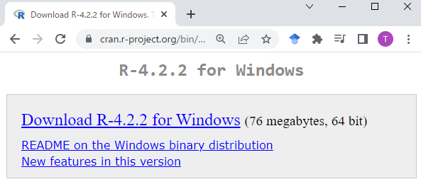
2.2 インストーラの起動
ダウンロードしたファイルをクリック． 「…許可しますか?」に対して，「はい」を選択．
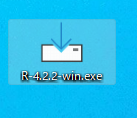 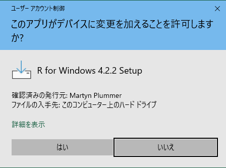
- インストール中に使用する言語
何でも大丈夫なので，好きなものを選ぶ．
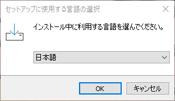
- インストールの確認
「次へ」をクリック．
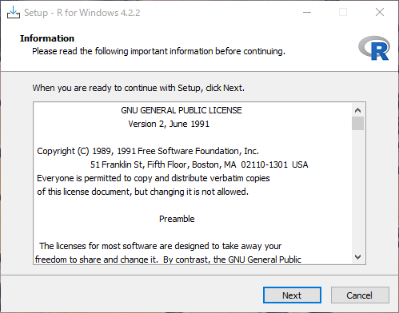
- インストール先のフォルダ
そのままでOK．好みがあれば変更する．
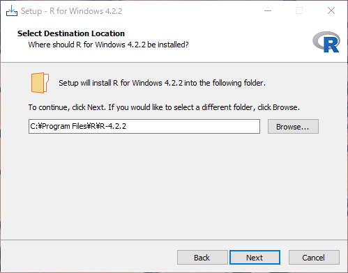
- インストールするもの
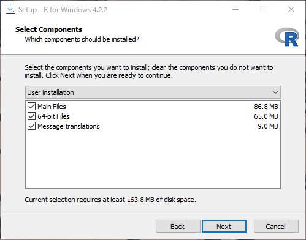
とりあえず，すべてチェックしておくくと良い． Message translationは，Rからのメッセージを日本語に翻訳するかどうか． チェックを入れないと，英語のみの表示．
結論としえは，とりあえずチェックを入れておき，必要に応じて英語で表示させるという方法が良いかもしれない． チェックを入れておくと，エラーメッセージなどを日本語で表示させることができる． 「そら日本語のほうが良いやん」と思うかもしれない． よくわからないエラーメッセージがしかも英語で表示されたら，わけがわからないからです． ただ，プログラミングの世界では，英語でのエラーメッセージのほうが便利なことが結構ある． それは，エラーメッセージをそのままネットで検索するときである． 日本語でのエラーメッセージだとネット上の情報が限られる． 一方，英語でのエラーメッセージで検索すると，原因や対処方法をかなりの確率で知ることができる．
# https://cell-innovation.nig.ac.jp/SurfWiki/R_errormes_lang.html
Sys.getenv("LANGUAGE") # 設定の確認
# 設定の変更方法
Sys.setenv(LANGUAGE="en") # 英語に変更
Sys.setenv(LANGUAGE="jp") # 日本語に変更- オプションの選択
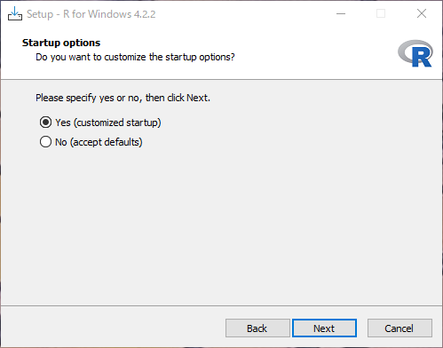
とりあえず「Yes」を選択． 以下のオプションを選択するかどうか．
- ウィンドウの表示方法(MDI / SDI)の選択
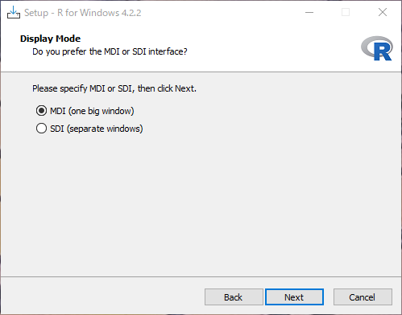
個人的な好みはSDIですが，好みの問題ですので正直どちらでも大丈夫． MDI(左)は大きな1つのWindowの中に，コンソール(プログラムの入力部分)，グラフ，ヘルプなどが表示される． SDI(右)はコンソール，グラフ，ヘルプが別々のWindowとして表示される． どちらかといえば，自由度が高い．
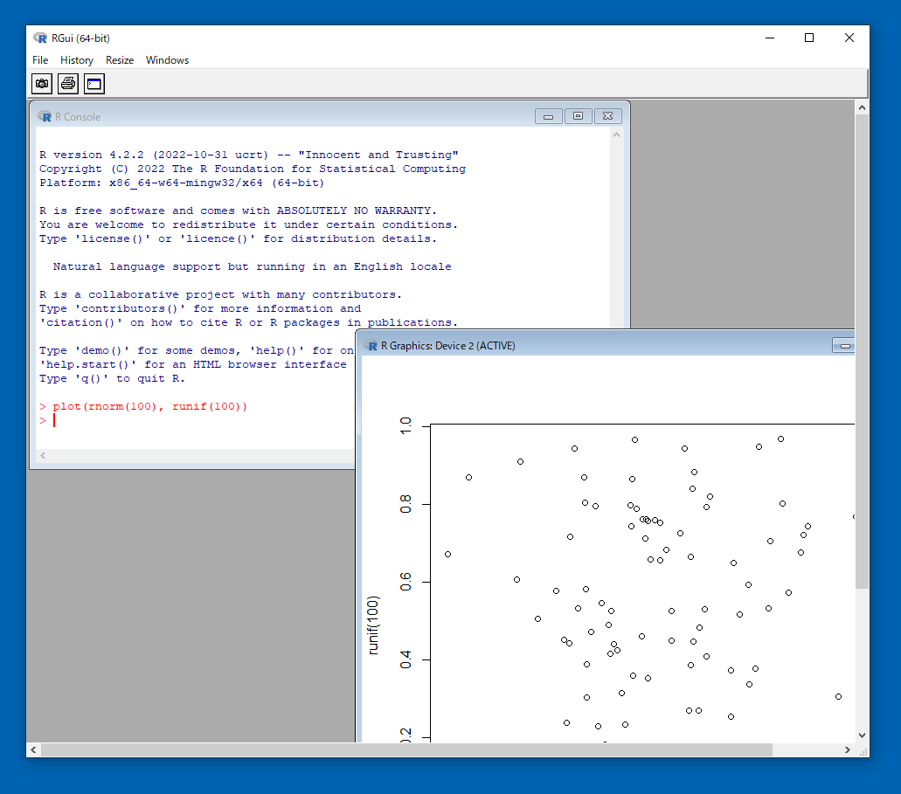 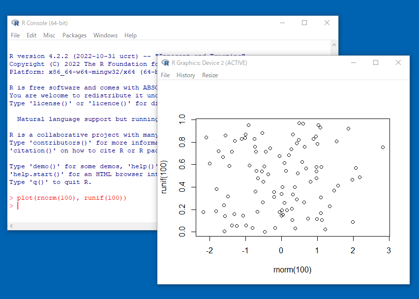
- ヘルプの表示方法(Plain text / HTML help)の選択
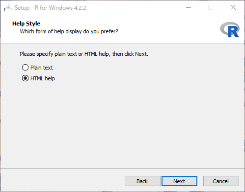
個人的な好みはPlain textだが，好みの問題で正直どちらでも構わない． Plain textはテキストファイルで表示されるシンプルな作り． HTML helpはヘルプがブラウザ(GoogleChrome等)で表示される． 関連する関数などへのリンクが表示されるので，それらを参照するのは便利．
- その後の設定
その他は，既定値(そのまま)でOK．
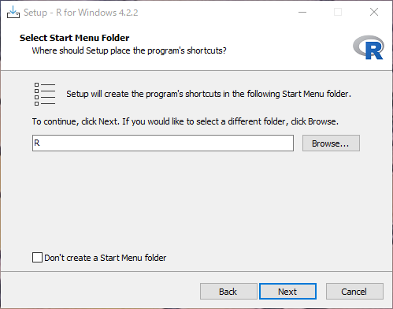 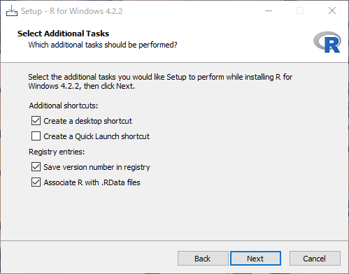 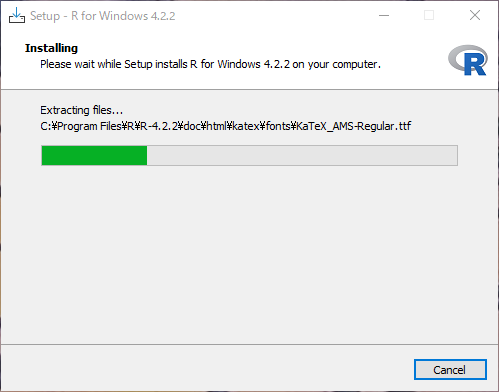 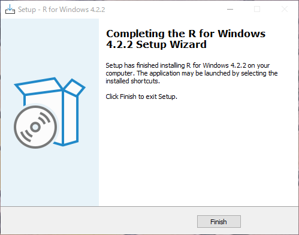